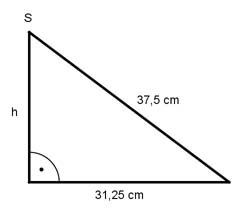

Aufgabe 246 Von einem Blech mit einem Durchmesser von 75 cm wird ein Kreisausschnitt mit einem Mittelpunkt- swinkel von 60° abgeschnitten und aus dem Rest ein Kegel hergestellt. Wie groß sind dessen Höhe h, sein Grundkreis- radius r und sein Volumen V? Der Kreisauschnitt mit dem Mittelpunktswinkel von 60° ist 1/6 der ursprünglichen Kreisfläche. r = d/2 = 75 cm/2 = 37,5 cm = Mantellinie s des Kegels Restumfang U ohne Kreisausschnitt = Umfang des Kegelgrundkreises: 5 5 U = --- * 2 * л * r = --- * 2 * л * 37,5 cm = 6 6 = 196,25 cm U = 2 * л * r |:2*л U ------ = rl 2 * л 196,25 cm r = ------------ = 31,25 cm 2 * л

Satz von Pythagoras zur Berechnung der Höhe h: 37,52 cm2 = h2 + 31,252 cm2 | -31,252 h2 = 37,52 cm2 - 31,252 cm2 h2 = 1 406,25 cm2 - 976,56252 cm2 = 429,7 cm2 |√ h = 20,7 cm л * rKegel2 * h V = ----------------- = 3 л * 31,252 cm2 * 20,7 cm = -------------------------- = 3 V = 21 158 cm3 = 21,2 dm3